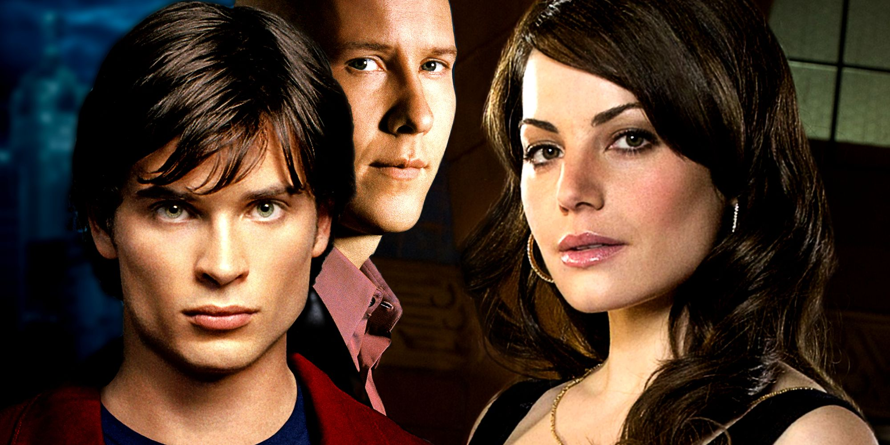

Capítulos Destacados

Smallville tiene varios episodios que se volvieron icónicos por su impacto en la historia, el desarrollo de personajes o momentos clave dentro del universo de Superman. Te dejo una selección de capítulos destacados (mezclando calidad, importancia narrativa y popularidad):
- “Pilot” (Temporada 1, Episodio 1): El comienzo de todo. Presenta a Clark Kent, Lex Luthor y el conflicto central. Marca el tono de la serie.
- “Rosetta” (Temporada 2, Episodio 17): Uno de los favoritos de los fans. Aparece Christopher Reeve como el Dr. Swann, conectando directamente con el legado clásico de Superman.
- “Memoria” (Temporada 3, Episodio 19): Explora el pasado de Lex y su relación con su padre, profundizando en su transformación psicológica.
- “Transference” (Temporada 4, Episodio 6): Episodio muy original donde hay un intercambio de cuerpos entre Clark y Lionel Luthor. Muestra el rango actoral de Tom Welling.
- “Reckoning” (Temporada 5, Episodio 12): Uno de los capítulos más impactantes emocionalmente. Clark intenta cambiar el destino, pero paga un precio muy alto.
- “Zod” (Temporada 5, Episodio 22): Final de temporada intenso que introduce la amenaza del General Zod y eleva el tono de la serie.
- “Justice” (Temporada 6, Episodio 11): Aparece la Liga de la Justicia (Green Arrow, Flash, Cyborg, Aquaman). Muy celebrado por los fans de DC.
- “Apocalypse” (Temporada 7, Episodio 18): Clark ve un mundo donde nunca llegó a la Tierra. Un episodio clave sobre su importancia como héroe.
- “Bride” (Temporada 8, Episodio 10): Introduce a Doomsday y mezcla drama con acción en un evento importante dentro de la temporada.
- “Finale” (Temporada 10, Episodios 21-22): El cierre de la serie. Clark finalmente asume su destino como Superman. Muy esperado por años.